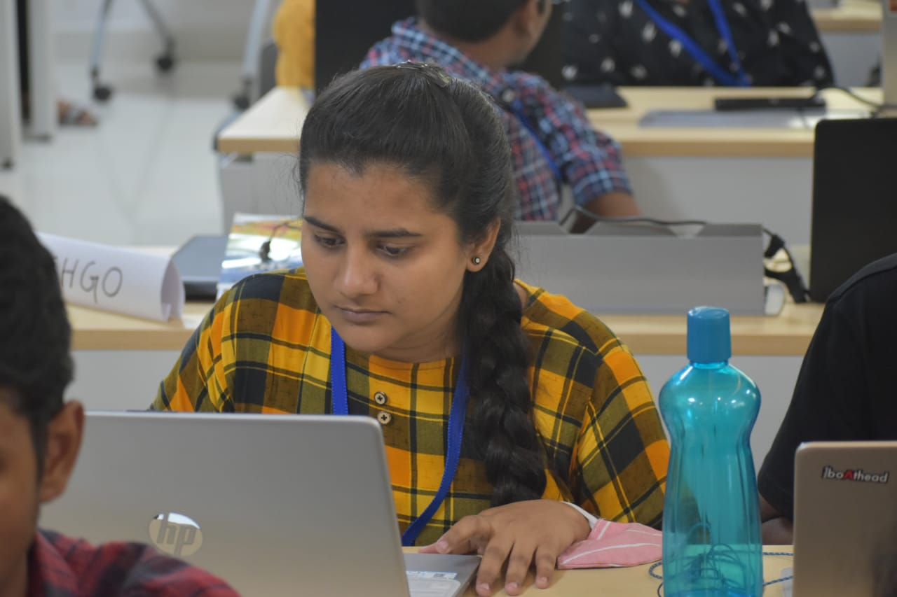

S
hweta Jha
DevOps Engineer || Backend & Cloud || SRE

DevOps Engineer || Backend & Cloud || SRE
Kubernetes, Docker, Terraform, CI/CD, AWS, and infrastructure automation
Microservices, REST APIs, Kafka pipelines, and event-driven architecture
Observability with Grafana, ELK, Prometheus, and production incident response
Organised by Entrepreneurship Development Cell, SIT Bhubaneswar
Organised by YFS chapter Bhubaneswar
An initiative of Government of India.
Organised by Coding Ninjas.
DevOps Engineer
Haber Water, PuneBuilt backend services and DevOps automation with Python/Node.js, Docker, and Kubernetes. Designed microservices across 10+ services, engineered Kafka pipelines processing 400GB data, and implemented CI/CD with Grafana/ELK observability — reducing production failures by 40%.
DevOps Intern
Haber Water, PuneDeployed containerized services with Docker and REST APIs. Automated infrastructure with Terraform, CI/CD pipelines, and Python/Bash scripting. Managed MySQL databases and configured Nginx load balancing for production services.
Research Intern
IIT HyderabadOptimized transaction scheduler in Hyperledger Sawtooth using multi-threading. Researched distributed consensus mechanisms for scalability and fault tolerance.
Web Development Intern
Syllogistek Pvt. Ltd.Built responsive and user-friendly websites using PHP.
Cloud Solution Intern
Ingenious-TechProvided secure infrastructure solutions in Microsoft Azure.
B.Tech Computer Science
Silicon Institute of Technology, BhubaneswarCGPA: 9.57
Intermediate
Vidya Bharati Chinmaya Vidyalaya, Telco, JamshedpurPercentage : 94.8
Matriculation
Kerala Public School, BurmaminesPercentage : 96.6